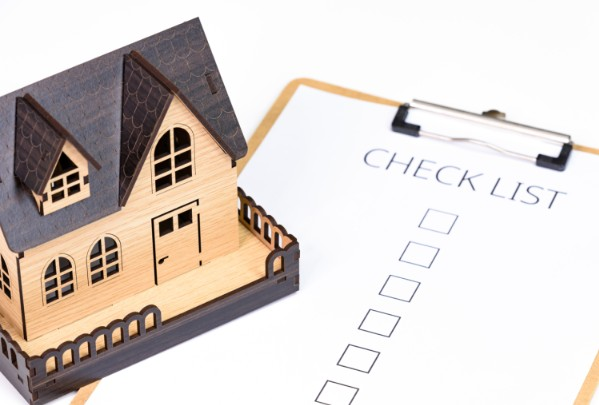

이사 당일·3일 이내·1주일 이내로 나눠 빠뜨리기 쉬운 업무 정리

이사를 마치면 눈앞에 보이는 박스 정리와 가구 배치부터 시작하기 쉽습니다. 하지만 이사 당일과 첫 주에는 사진을 남겨야 하는 일, 업체가 철수하기 전에 확인해야 하는 일, 신청 기한이 정해진 행정 업무가 한꺼번에 몰립니다. 순서를 정하지 않으면 파손 사실을 늦게 발견하거나 이전 집과 새집의 공과금이 섞이고, 전입신고와 인터넷 설치를 뒤늦게 처리해 불편을 겪을 수 있습니다.
가장 효율적인 방법은 해야 할 일을 시간순으로 나누는 것입니다. 이사 당일에는 현장 확인과 정산에 집중하고, 3일 이내에는 전입신고와 생활 필수 설비를 처리하며, 첫 주 안에는 각종 주소 변경과 남은 하자 통보를 끝내는 방식입니다.
| 처리 시점 | 주요 업무 | 남겨둘 자료 |
|---|---|---|
| 이사 당일 | 집 상태, 계량기, 열쇠, 파손, 잔금과 관리비 확인 | 사진·영상, 영수증, 계약서, 정산 문자 |
| 3일 이내 | 전입신고, 임대차 절차, 도시가스, 인터넷, 가전 점검 | 신청번호, 예약 문자, 설치 확인서 |
| 1주일 이내 | 금융·배송지 주소, 차량 정보, 폐기물, 하자 통보 확인 | 주소 변경 화면, 접수번호, 하자 통보 메시지 |
새집에 짐이 들어오기 전이나 큰 가구를 배치하기 전에 벽, 바닥, 창호, 천장, 싱크대, 욕실과 옵션 가전의 상태를 촬영하세요. 찍힘, 균열, 곰팡이, 누수 흔적과 파손된 부속품이 있다면 가까이에서 한 장, 방 전체 위치를 알 수 있도록 멀리서 한 장을 함께 남기는 것이 좋습니다.
임대차 주택이라면 발견한 하자를 임대인이나 관리인에게 문자 또는 이메일로 전달하세요. 전화로만 알리면 언제 어떤 상태를 전달했는지 다시 확인하기 어려울 수 있습니다. 사진의 촬영 날짜가 남도록 원본을 보관하는 것도 중요합니다.
이전 사용자의 사용분과 새 입주자의 사용분을 구분하려면 입주 시점의 계량기 수치를 확인해야 합니다. 전기, 수도와 가스 계량기를 촬영하고 관리사무소나 임대인에게 정산 기준일을 확인하세요. 오피스텔이나 공동주택은 관리비에 일부 항목이 포함될 수 있으므로 개별 고지인지 관리비 합산인지도 확인하는 것이 좋습니다.
현관키만 받고 끝내지 말고 공동현관 태그, 우편함 열쇠, 주차장 리모컨, 창고 열쇠와 옵션 가구 열쇠를 모두 받았는지 확인하세요. 도어록 비밀번호는 입주 후 바로 변경하고, 이전 세입자나 작업자가 사용했던 임시 비밀번호가 남아 있지 않은지도 살펴보는 편이 안전합니다.
이사업체가 철수하기 전에 냉장고, 세탁기, TV, 컴퓨터와 같은 큰 가전의 외관과 작동 상태를 확인하세요. 가구 모서리, 유리문, 서랍과 문짝이 정상적으로 열리는지도 살펴봅니다. 박스 수량이 맞는지, 별도로 운반하기로 한 귀중품이나 부속품이 누락되지 않았는지도 확인해야 합니다.
파손이 발견되면 사진과 영상을 촬영하고 현장 담당자에게 바로 알리세요. 이사 계약서, 견적서와 보상 기준을 함께 확인하고 접수 방법과 필요한 자료를 문자나 문서로 안내받는 것이 좋습니다.
임대차 잔금, 이전 집 관리비, 새집 관리비 기준일, 주차비와 이사비 잔금을 각각 구분해 확인하세요. 현금으로 지급했다면 영수증을 받고, 계좌이체를 했다면 이체 내역과 정산 내용을 함께 보관합니다. 관리사무소에서 받아야 할 정산 확인서가 있는지도 확인하세요.
새 주소지로 실제 이동했다면 정부24 온라인 신청 또는 주민센터 방문으로 전입신고를 처리합니다. 새로운 거주지로 전입한 날부터 14일 이내 신고하는 것이 원칙이지만, 주소지 기준으로 처리되는 생활 업무가 많으므로 가능한 한 이사 직후 진행하는 편이 좋습니다.
온라인 신청은 접수 화면을 본 것으로 끝내지 말고 최종 처리 상태까지 확인하세요. 기존 세대에 편입하는 경우 세대주 확인이 필요할 수 있으며, 처리 후 주민등록등본을 발급해 새 주소와 세대 구성이 정확한지 확인하는 것이 좋습니다.
전입신고와 확정일자는 서로 다른 절차입니다. 임차인은 본인의 계약 형태에 따라 확정일자와 임대차계약 신고 등 필요한 절차가 무엇인지 따로 확인해야 합니다. 전입신고를 했다고 보증금 보호와 관련된 절차가 자동으로 모두 끝나는 것은 아닙니다.
가스레인지나 가스보일러를 사용하는 집은 지역 도시가스 공급사의 개통과 안전 점검이 필요할 수 있습니다. 이사 성수기에는 방문 일정이 늦어질 수 있으므로 미리 예약하는 편이 좋습니다. 가스 냄새가 나거나 연결 부위가 불안정해 보이면 직접 조작하지 말고 공급사에 연락하세요.
기존 인터넷을 이전할지, 약정이 끝난 뒤 신규 가입으로 바꿀지 먼저 확인하세요. 현재 약정 종료일, 해지 시 할인반환금, 가족결합 할인과 새 주소의 설치 가능 여부를 확인하면 이전 설치와 변경 중 어느 쪽이 유리한지 판단하기 쉽습니다.
주말과 월말에는 설치 기사 일정이 빨리 마감될 수 있습니다. 모뎀, 공유기, 셋톱박스, 전원 어댑터와 리모컨 같은 임대 장비도 빠짐없이 챙기세요. 새집의 단자함과 설치 위치를 미리 비워두면 작업 시간이 줄어듭니다.
냉장고가 안정적으로 냉각되는지, 세탁기 급수와 배수 호스에서 물이 새지 않는지, 에어컨 배수와 실외기 작동에 이상이 없는지 확인하세요. 운반 직후에는 제품별로 설치기사가 안내한 안정 시간을 지킨 뒤 작동해야 하는 경우도 있습니다.
식기세척기, 정수기와 비데처럼 급수관에 연결된 제품은 연결 부위를 마른 휴지로 닦은 뒤 잠시 후 다시 확인하면 작은 누수를 발견하기 쉽습니다. 누수는 아래층 피해로 이어질 수 있으므로 초기에 확인하는 것이 중요합니다.
전입신고를 해도 금융기관과 보험사에 등록된 주소가 자동으로 모두 바뀌는 것은 아닙니다. 은행, 카드사, 증권사, 보험사와 대출기관의 우편물 수령지를 확인하세요. 중요 안내문이나 갱신 서류가 이전 주소로 발송되지 않도록 모바일 앱과 홈페이지에서 주소를 변경하는 것이 좋습니다.
우체국의 주거이전 우편물 전송서비스를 이용하면 이전 주소로 온 우편물을 일정 기간 새 주소로 받을 수 있습니다. 다만 이 서비스만 믿지 말고 쇼핑몰 기본 배송지, 생수·신문·식품 정기배송, 병원과 학교에 등록된 주소도 각각 변경해야 합니다.
쇼핑몰 앱은 이전 주소가 기본 배송지로 남아 있는 경우가 많습니다. 이사 직후 주문할 때는 결제 버튼을 누르기 전에 배송지를 다시 확인하세요.
자동차 관련 주소 정보와 새 거주지의 주차 등록 절차를 확인하세요. 공동주택은 차량등록증, 입주 확인서나 임대차계약서 등 관리사무소에서 요구하는 자료가 있을 수 있습니다. 방문 차량 등록 방식과 주차비도 함께 확인하면 이후 불편을 줄일 수 있습니다.
버릴 냉장고, 세탁기, TV와 에어컨이 있다면 폐가전 무상방문수거 대상인지 먼저 확인하세요. 대상에 포함되지 않는 가구와 생활폐기물은 지자체 대형폐기물 신고 후 지정된 방법으로 배출해야 합니다. 지역마다 품목 분류와 수수료, 배출 장소가 다를 수 있으므로 거주지 지자체 안내를 확인하세요.
며칠간 생활해 보면 처음에는 보이지 않던 누수, 배수 불량, 창문 잠금 문제, 보일러 이상, 콘센트 불량과 소음이 발견될 수 있습니다. 하자 위치와 증상을 정리해 사진이나 영상과 함께 임대인, 관리인 또는 시공사에 전달하세요.
수리 요청은 전화로만 끝내지 말고 문자나 이메일처럼 날짜와 내용이 남는 방식으로 보내는 것이 좋습니다. 긴급한 누수나 전기 문제는 즉시 연락하고, 일반 하자는 항목별로 묶어 전달하면 일정 조율이 쉬워집니다.
이사 관련 서류와 사진이 여러 메신저와 앱에 흩어지면 나중에 찾기 어렵습니다. 휴대전화에 ‘이사’ 폴더를 만들어 집 상태 사진, 계량기 사진, 계약서와 견적서, 정산 영수증, 접수번호와 설치 예약 문자를 한곳에 모아두세요.
| 자료 | 보관 이유 | 권장 보관 형태 |
|---|---|---|
| 입주 전 집 상태 | 기존 하자와 새 손상 구분 | 원본 사진·영상 |
| 계량기 수치 | 공과금 사용 기준일 확인 | 날짜가 남는 사진 |
| 이사 계약·견적서 | 작업 범위와 보상 기준 확인 | PDF 또는 촬영본 |
| 잔금·관리비 영수증 | 중복 청구와 정산 분쟁 방지 | 영수증과 계좌이체 내역 |
| 하자 통보 내역 | 통보 날짜와 수리 요청 확인 | 문자·이메일 화면 |
가구를 배치하기 전에 새집의 벽, 바닥, 옵션 시설과 계량기 수치를 사진으로 남기고 이삿짐 파손과 누락을 확인하는 것이 좋습니다.
새로운 거주지로 전입한 날부터 14일 이내 신고하는 것이 원칙입니다. 다른 주소 변경 업무의 기준이 되므로 이사 직후 가능한 한 빠르게 처리하는 편이 좋습니다.
은행, 카드, 보험, 쇼핑몰, 정기배송과 통신 서비스의 주소는 자동으로 모두 바뀌지 않습니다. 각 서비스의 앱이나 홈페이지에서 별도로 확인하세요.
현재 약정 종료일, 할인반환금, 결합할인과 새 주소의 설치 가능 여부를 확인한 뒤 이전 설치, 재약정과 신규 가입의 약정기간 총비용을 비교해야 합니다.
가능하면 이사업체가 철수하기 전에 확인하세요. 파손이나 누락을 발견하면 사진과 영상을 남기고 현장 담당자에게 즉시 알리는 것이 좋습니다.
급한 문제는 전화로 알리되 사진과 증상, 요청사항을 문자나 이메일로 다시 보내 통보 날짜와 내용을 남기는 편이 좋습니다.
이사 후 해야 할 일은 짐 정리보다 현장 확인과 기한이 있는 업무를 먼저 처리하는 것이 핵심입니다. 이사 당일에는 새집 상태와 계량기, 파손과 정산을 확인하고, 3일 이내에는 전입신고, 가스와 인터넷 등 생활 필수 설비를 준비하세요. 첫 주 안에는 금융·배송지 주소 변경과 하자 통보까지 마무리하는 것이 좋습니다.
한 번에 모두 처리하기 어렵다면 사진을 남겨야 하는 일과 업체가 현장에 있을 때 확인해야 하는 업무부터 진행하세요. 접수번호, 영수증과 하자 통보 내역을 한 폴더에 보관하면 이사 후 생길 수 있는 재방문과 정산 분쟁을 줄이는 데 도움이 됩니다.